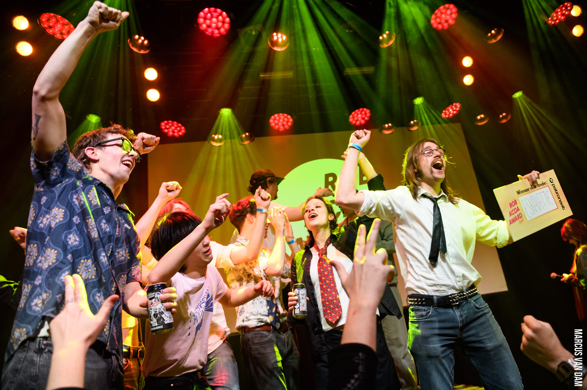
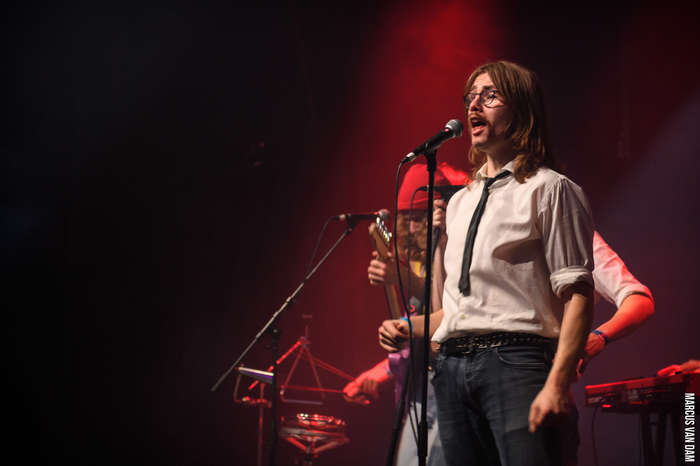
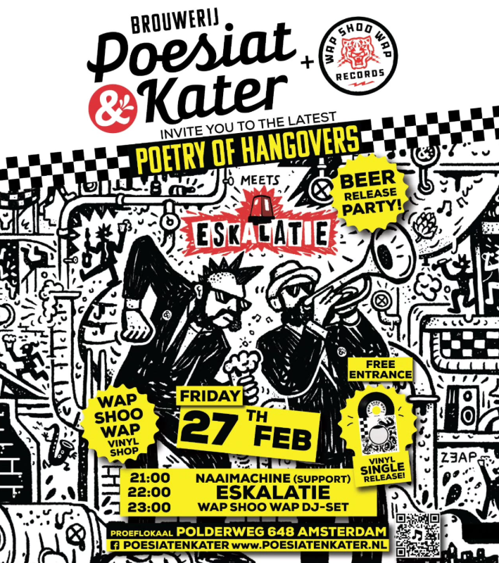

Winst, Bier en Vinyl | Door Thys, Dani en RowanThys: Een blog bijhouden blijk een lastigere klus dan ik origineel dacht, zeker wanneer er een hele hoop gebeurt. Ik vind het echter wel zo netjes om jullie als trouwe lezers op de hoogte te houden, al mag het dan wat laat zijn. Zodoende volgen hier een verslag van onze deelname en winst in de Rob Acda Awards door Dani en Rowan, gevolgd door nieuwtjes over onze aankomende single release. Dani: Daar gingen we dan: Voorronde 1 van de Rob Acda Awards! Belangrijk is dat we grappen maken en vooral niet proberen te winnen. Althans, dat is wat we dachten toen we meededen aan de Popprijs Amstellanden. Deze keer zouden we het anders aanpakken, het is ten slotte een wedstrijd in ons eigen Haarlem. Veel mensen uitnodigen en strak spelen dus. Laatste spelen, helemaal top. Het enige minpunt hieraan was dat we geen soundcheck zouden hebben, zelfs niet voor de blazers, maar enkel een linecheck die 20 minuten zou duren, inclusief het opbouwen. Vanaf hier heb ik alleen belangrijke dingen te doen, dus geef ik het woord aan Rowan. Rowan: AAAAAAAAAAAAAAAAAAAAAAAAAAAAAAHHHHHHHHH WAAAAAAAAAAAAAAAAAAAHHHHHHHHH AAAAAAAAAAAAAAAAAAAAAAAAAAAAAAAAAAAAAHHHHHHHHHHHHHHHH AAAAAAAAAAAAAAAAAAAAAAAAAHHHHHHHH HHHHEEEEEELLLLLLPPPPP HEEEEEEELLLLLLPPPPP AAAAAAAAAHHHHHHHHH kom naar finale Rob acdAAAAAAAHHH wij eskalatie wij gaaf wij winnen Terug naar Thys: Aankomende vrijdag is het dan eindelijk zo ver: onze eerste single. Niet alleen dat, maar bijbehorend brengen we ook een eigen biertje uit! Al dat gepraat over bier (Dani, 2025) heeft uiteindelijk zijn vruchten afgeworpen en wij presenteren met trots en liefde een heuse DDH SKA NEIPA. Al het moeilijke werk is gedaan door onze persoonlijke brouwer Miguel en zijn kameraden bij de brouwerij Poesiat & Kater in Amsterdam en het eindproduct is zalig. In de woorden van mijn Pake: “Jo kinne priuwe dat it gjin Amstel of Heineken is.” Op het eveneens Amsterdamse platenlabel Wap Shoo Wap records brengen we twee nummers uit op single. Omdat wij van al onze liedjes houden alsof het onze kinderen zijn hebben we geen A- of B-kant gekozen, maar het zijn twee allebei A-kanten! De liedjes die we uitbrengen heten Bellenblaasmachine en Totale Eskalatie. Die eerste is ondertussen al een week te beluisteren op het internet en de oplettende luisteraar heeft misschien gemerkt dat ook de tweede sinds vandaag op het internet aanwezig is. Maar al dat digitaal gebeep en boop is uiteindelijk toch niks tegen datgene wat wij morgen presenteren: een echte vinyl single. Het hele evenement zal plaatsvinden in het proeflokaal van de brouwerij (Polderweg 648, Amsterdam) en de kaartjes zijn wel nul euro en aan de deur te koop. Geloof dus mij maar dat het bier lekker en de muziek goed wordt. Het voorprogramma wordt geleverd door onze stadsgenoten van Naaimachine, die overigens afgelopen zaterdag nog mochten vergezellen toen we samen te gast waren bij de Badslippers. Enfin, ik dwaal af. Ze starten rond een uur of negen, maar de tap gaat al eerder open dus wees er voordat wij alles op hebben gedronken. Voor de zeker- en duidelijkheid een samenvatting: Wij hebben twee weken terug de publieks- en juryprijs gewonnen van de voorronde van de Rob Acda Award, waarmee we ons plaatsen in de finale die ongetwijfeld ook zullen winnen. Morgen brengen wij ons biertje en onze single uit bij het proeflokaal van de brouwerij Poesiat en Kater. Kaartjes zijn gratis en de bands beginnen om 9 uur en het bier begint al eerder.~26 februari 2026~ |

Wij die de Rob Acda Award voorronde winnen. "Ik heb zo RAA RAA RAA RAAnzinnig gedroomd. Ik werd met Ska Ska Ska Skado's overstroomt." Magistraal mooie poster. |